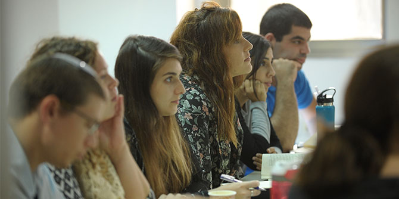

בתחילת חודש נובמבר נפתח במכון מנדל למנהיגות מחזור ב' של תכנית מנדל למנהיגות נוער, המיועדת למנהיגים מקרב הסגל הבכיר של מובילי החינוך הבלתי פורמלי (תנועות וארגוני הנוער) בישראל.
מטרת התכנית, שאורכה שנת לימודים אקדמית, לסייע למנהיגות הבכירה של תנועות הנוער וארגוני הנוער בישראל ליצור פלטפורמה משותפת לעיון בהיבטיו השונים של החינוך ובאתגרים הניצבים בפניהם כיום.
בתכנית 22 עמיתים, רובם בגילאי 35-27 – מנהיגים מקרב הסגל הבכיר של מגוון תנועות הנוער וארגוני נוער: הצופים, הנוער העובד והלומד, בני עקיבא, אריאל, המחנות העולים, אג'יאל, נוער קדימה, נוער לתת, מרכז מעשה, אחרי, חוגי הסיירות של קק"ל ועוד. התכנית פועלת לגיבוש זהותם החינוכית של המשתתפים, להעמקת הידע העיוני והמעשי שלהם, ולפיתוח יכולתם לתרגם תפיסות חינוכיות לכדי מעשה.

"החינוך הבלתי הפורמלי בישראל הוא אחד המקומות המעטים שבהם אפשר להפגיש בין אנשים ממקומות שונים ובעלי תפיסות עולם שונות. ואכן, את הרב-גוניות והשונות הקיימות בחברה הישראלית אפשר לראות בבירור באולם הזה", אמר בפתיחת התכנית ד"ר אלי גוטליב, מנהל מכון מנדל למנהיגות. "את הרב-שיח הרב-תרבותי הזה רוצה מכון מנדל למנהיגות להעצים".
דני רוזנר, מנהל מנהל חברה ונוער במשרד החינוך, ציטט את דברי ראש הממשלה המנוח יצחק רבין בישיבה של הנוער העובד והלומד: "אם יש משהו שצריך לייחד נוער – זו מרדנות נגד מוסכמות. לא מרדנות לשם מרדנות, אלא מרדנות לשם שינוי... קיימו את אשר ראוי לקיים, שנו את אשר ראוי לשנות, והרבה דברים דורשים שינוי".
תכנית מנדל למנהיגות נוער מתקיימת במכון מנדל למנהיגות בירושלים, וכוללת הרצאות, סדנאות, ניתוחי מקרים, סיורים ומפגשים עם אנשי חינוך, חברה ותרבות. במהלכה נידונים מגוון נושאים: היבטים פילוסופיים, סוציולוגיים ופסיכולוגיים של החינוך, צדק ושינוי חברתי, זהות יהודית וציונית עכשווית ואתגרי החברה הישראלית. את התכנית מנהל מיקי נבו, והצוות כולל את ירון גירש ואודיה לוין-סוסנה.
{kind=link}